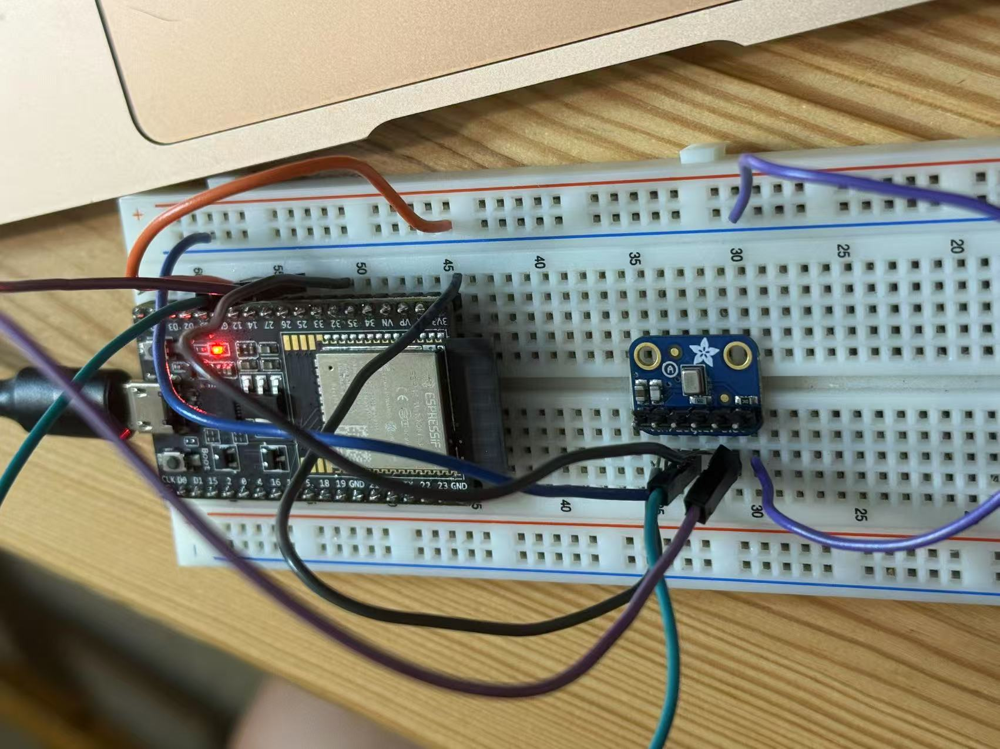
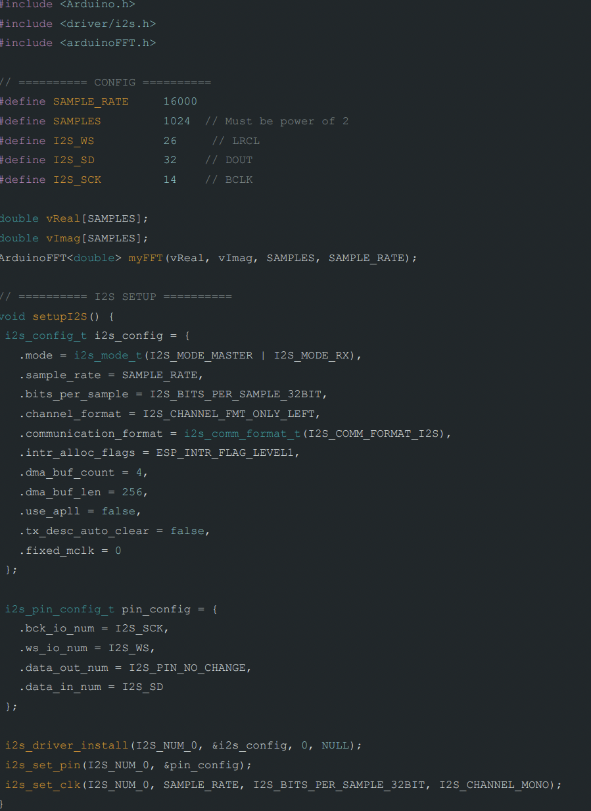
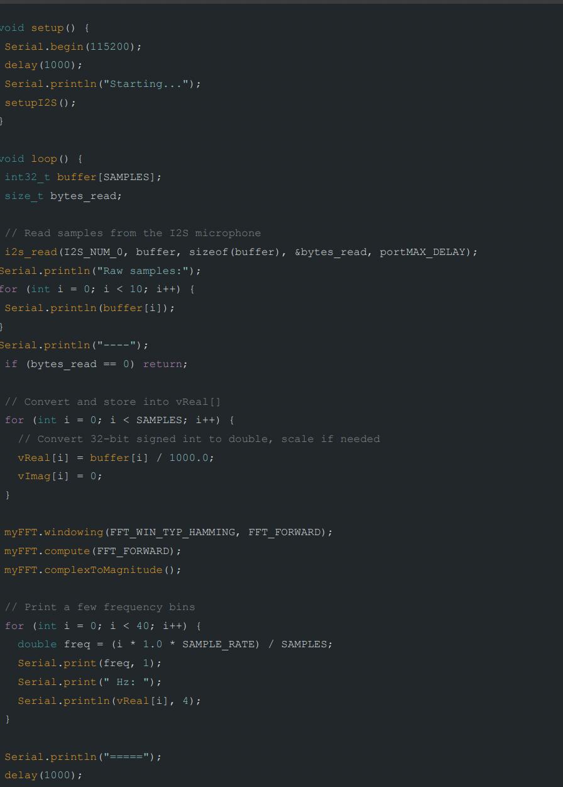

<div class="textcontainer">
<p class="margin"> </p>
<h3>Week 6: Electronic Inputs</h3>
<h4><b><u> Assignment 1: Capactive Sensor </b></h4></u>
<p class = "margin"></p>
For my final project, I am leaning towards my idea of color changing speaker. The speaker changes colors based on the pitch of sounds in it's enviornment. I plan on doing so by adding sensors and detect the pitches and led strips that changes colors with it.
<p class = "margin"></p>

<p class = "margin"></p>
I used an MEMS microphone to do so.
<p class = "margin"></p>
<video width="640" height="480" controls>
<source src="pitch_result.mp4" type="video/mp4">
</video>
<p class = "margin"></p>
This is a video of the results when I was playing a video in the background, as shown the pitch/hz increases
<p class = "margin"></p>
This is my code in Arduino:
<p class = "margin"></p>


<p class = "margin"></p>
<h4><b><u> Assignment 2: [Use + Calibrate Another Sensor] </b></h4></u>
<p class = "margin"></p>
<video width="640" height="480" controls>
<source src="work.mp4" type="video/mp4">
</video>
<p class = "margin"></p>
This is a video of the gears and motor hidden inside
<
<p class = "margin"></p>
</div>